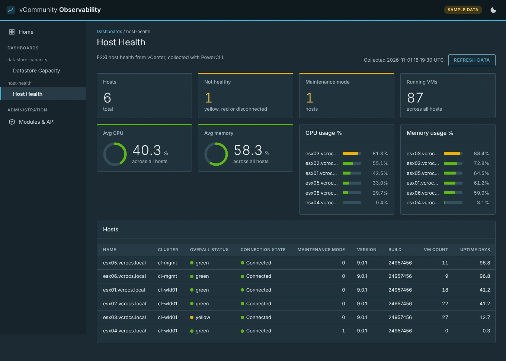

Explore your environment
Browse vSphere inventory, host health, datastore capacity, and DBH Insights from the built-in dashboards.
Open-source project
Collect vCenter and VCF Operations data in SQLite. Explore it in built-in dashboards or access it through Management Pack Builder.

Browse vSphere inventory, host health, datastore capacity, and DBH Insights from the built-in dashboards.
Use the token-protected REST API with Management Pack Builder to pull collected data into VCF Operations.
Run vCommunity Ask alongside the dashboards and use local Ollama models to chat with sources you choose.
Start the dashboards with built-in sample data using Docker Compose.
Install Git and a container engine. On macOS or Windows, start Docker Desktop or start Rancher Desktop with the dockerd (moby) engine. On Linux, install Docker Engine and the Compose plugin.
git --version
docker compose versiongit clone https://github.com/dalehassinger/vCommunity-Observability.git
cd vCommunity-ObservabilityCreate config/config.yaml and .env before starting Docker. Copy the token printed by these commands into VCO_API_TOKEN_MPBUILDER in .env. Uncomment VCO_MOCK=1 in the same file to enable sample data.
cp config/config.example.yaml config/config.yaml
cp .env.example .env
openssl rand -hex 32Copy-Item config/config.example.yaml config/config.yaml
Copy-Item .env.example .env
$rng = [System.Security.Cryptography.RandomNumberGenerator]::Create()
$bytes = New-Object byte[] 32
$rng.GetBytes($bytes)
$rng.Dispose()
-join ($bytes | ForEach-Object { $_.ToString('x2') })Keep .env private. If your container engine restricts port 514, add SYSLOG_PORT=1514 to .env.
mkdir -p data exports extra-modules control
chmod 777 control
if [ "$(uname -s)" = Linux ]; then
sudo chown -R 10001 data exports extra-modules
fi
docker compose up -d --build vco
docker compose psNew-Item -ItemType Directory -Force data, exports, extra-modules, control | Out-Null
docker compose up -d --build vco
docker compose psThe first build can take several minutes. Wait for vco to report healthy.
Visit localhost:8080. Open Modules & API, then select Run collectors now for a module. Enter your token if prompted and open a dashboard from the sidebar.
To stop the application, run docker compose down from the repository folder.
Remove VCO_MOCK=1 from .env, then rerun docker compose up -d vco. Go to Settings → Connections, add your vCenter address and read-only credentials, and select Save and test with your API token. Enable SSL verification when vCenter has a trusted certificate.
ASK_API_TOKEN in .env. Choose an installed chat model with ASK_CHAT_MODEL. The example below uses qwen3:8b.ollama pull nomic-embed-text
ollama pull qwen3:8bCreate Ask's data and source folders, then start the Ask container.
mkdir -p ask-data ask-knowledge ask-sources
if [ "$(uname -s)" = Linux ]; then
sudo chown -R 10002 ask-data
fi
docker compose up -d --build vco-askNew-Item -ItemType Directory -Force ask-data, ask-knowledge, ask-sources | Out-Null
docker compose up -d --build vco-askOpen localhost:8081, enter your Ask token, and select Settings → Test connection. Add a knowledge source, let it sync, then open New chat.